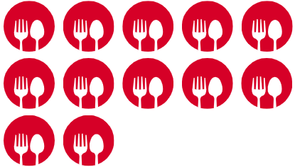

ENCHILADAS
Autor
Gerson Giovanni
Porciones

¿Delicioso?
Sí

HISTORIA
El platillo tiene su origen en las civilizaciones precolombinas, presente
incluso en el Códice Florentino menciona la palabra chillapitzalli, la cual
se conforma de la palabra náhuatl chilli, que significa chile, y de tlapitzalli
que significa flauta, es decir, flauta enchilada, descrita en el mismo texto
como platillo de tortilla y chiles.
INGREDIENTES
- Tortillas de maíz - 12
- Pollo - 1 kg
- Chiles secos - 6 (guajillo, ancho, etc.)
- Cebolla - 1 pieza
- Ajo - 2 dientes
- Canela - 1 rama
- Clavo de olor - 1 pieza
- Pimienta negra - 1 pizca
- Sal - al gusto
PROCEDIMIENTO
- Paso 1
- Se asan los chiles secos en un comal hasta que estén ligeramente quemados.
- Paso 2
- Se ponen a hervir en agua durante unos minutos para que se ablanden. Se les quita la piel y las semillas.
- Paso 3
- Se muelen los chiles con la cebolla, el ajo, la canela, el clavo de olor y la pimienta negra. Se sazona con sal al gusto.
- Paso 4
- Se cocina la carne de pollo o cerdo con agua, sal y especias al gusto.
- Paso 5
- Se bañan las tortillas en la salsa y se rellenan con la carne cocida. Se doblan las tortillas para formar las enchiladas.
- Paso 6
- Se fríen las enchiladas en aceite caliente hasta que estén doradas. Se sirven con crema, queso fresco y cebolla picada.
Fin.
Y listo, tienes tu rico platillo, solo queda ponerlo en un plato y disfrutar de la deliciosa comida mexicana a la mexicana. Muchas gracias por llegar hasta aquí, recuerda que hay mas platillos por probar y recuerda soplarle a tu comida, podría estar caliente.